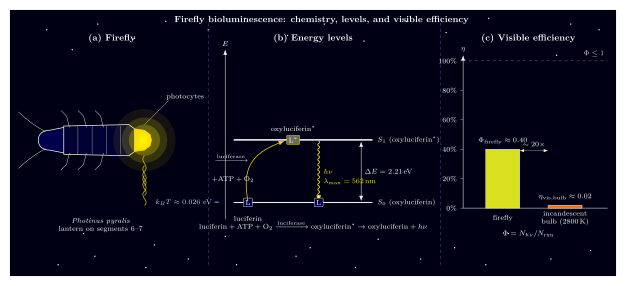

萤火虫的冷光是怎么来的?
上一节我们讨论了蜜蜂看见的紫外世界, 把视觉的边界推到了 $300\,\mathrm{nm}$. 但光与生命的故事还有另一条反过来的线索: 生物不仅接收光, 也自己发光. 夏天的夜里走过田埂, 稻叶间忽明忽暗的绿黄光点就是萤火虫. 它发出的光很特别 —— 你若用手指轻轻托住一只正发光的萤火虫, 手指不会觉得烫. 这和把手指伸向一支白炽灯泡的体验完全不同.
把一个发光体拿在手里而不觉得热, 意味着它几乎没有红外辐射, 把能量几乎全部送进了可见波段. 这是热力学上相当罕见的事情. 一盏 $2800\,\mathrm{K}$ 的钨丝灯, 辐射谱服从普朗克定律, 峰值在红外区 $\lambda \approx 1\,\mu\mathrm{m}$, 可见光只占总能的 $2\%$. 而萤火虫腹部末端那一点黄绿光, 发光效率 —— 确切地说, 每消耗一份化学能转化为可见光的比例 —— 可以达到白炽灯的近 20 倍. 它是怎么做到的?
答案不在温度里, 而在化学键里. 萤火虫绕开了黑体辐射这条效率极低的路线, 直接让一个分子的电子从激发态跃迁回基态, 把跃迁能差一次性打包成一个光子. 这一节我们把这套机制逐步拆开看.
一、发光器官里的三种角色: 荧光素、ATP 与氧
北美常见的那种大闪萤 (Photinus pyralis) 在腹部末端第 6、7 节有成对的发光器. 显微镜下看, 发光层是一层充满空气小管的光细胞, 下面垫着一层反光细胞充当"反光碗". 空气管把氧气精确地送到需要的位置, 这个结构的每一部分都指向同一个目的: 让化学反应在一个受控的微环境里进行.
反应的主角叫荧光素 (luciferin, 字根 lucifer "光的携带者"). 它是一个含苯并噻唑基团的小分子, 分子式大致 $\mathrm{C}_{11}\mathrm{H}_8\mathrm{N}_2\mathrm{O}_3\mathrm{S}_2$. 反应的催化剂叫荧光素酶 (luciferase), 一种约 62 kDa 的单链酶. 能量的提供者是生物界的通用货币三磷酸腺苷 ATP. 氧化剂是分子氧. 把它们写在一起, 就是:
$$ \mathrm{luciferin} + \mathrm{ATP} + \mathrm{O}_2 \ \xrightarrow{\mathrm{luciferase}}\ \mathrm{oxyluciferin}^{*} + \mathrm{AMP} + \mathrm{PP_i} + \mathrm{CO}_2, \tag{1} $$
随后激发态的氧合荧光素 $\mathrm{oxyluciferin}^{*}$ 自发地跃迁回基态, 发出一个光子:
$$ \mathrm{oxyluciferin}^{*} \ \longrightarrow\ \mathrm{oxyluciferin} + h\nu. \tag{2} $$
这两步合起来才是"发光". 第一步把化学键能抬进一个电子激发态, 第二步把这个电子激发态卸成一个光子. 中间还有一个酰基-AMP 中间体, 把 ATP 的高能磷酸键与荧光素羧基共价连接, 为后面的氧化脱羧提供了位点. 这些细节我们不展开, 但要强调一点: ATP 并不是直接给出光子能量的那一份, 它只是参与"点火"; 真正把分子送上激发态的能量主要来自分子氧的氧化和脱羧重排.
为什么自然会选这么绕的路? 因为要让一个分子进入可见光对应的激发态, 需要一次到位地注入 $\gtrsim 2$ eV, 而单一化学键的断裂通常只释放零点几个 eV. 萤火虫的反应用一串串联的放热步骤把能量累加起来, 再通过酶把这一能量 "漏斗" 到一个特定电子态, 避免了能量被分散成振动和热运动.
二、一个光子 2.2 eV: 能量账的收支
萤火虫发出的光是绿黄色, 峰值波长 $\lambda_{\max} \approx 562\,\mathrm{nm}$. 一个这样的光子带多少能量? 由 $E = h c / \lambda$ 换算, 采用 $hc = 1240\,\mathrm{eV\cdot nm}$ 的常用口诀:
$$ E_{h\nu} = \frac{hc}{\lambda_{\max}} = \frac{1240\,\mathrm{eV\cdot nm}}{562\,\mathrm{nm}} \approx 2.21\,\mathrm{eV}. \tag{3} $$
换成更化学的单位, $2.21\,\mathrm{eV} \times 96.5\,\mathrm{kJ\,mol^{-1}\,eV^{-1}} \approx 213\,\mathrm{kJ/mol}$. 所以"发一次光"就要从反应系统里拿出 213 kJ/mol 的能量送进激发态.
ATP 水解释放约 $30\,\mathrm{kJ/mol}$, 换算成 $0.31\,\mathrm{eV}$ 每分子, 显然不够. 那剩下的 $2.21 - 0.31 \approx 1.9\,\mathrm{eV}$ 从哪里来? 答案是分子氧的氧化. 荧光素被 $\mathrm{O}_2$ 氧化脱羧, 生成一个高能的二氧环 (dioxetanone) 中间体, 这个中间体的四元环非常紧张, 崩解时释放大量能量:
$$ \text{过氧化物中间体} \longrightarrow \text{CO}_2 + \text{oxyluciferin}^{*}, \tag{4} $$
这一步的能量放出约 $2.4\,\mathrm{eV}$, 绝大部分被定向灌入 oxyluciferin 的 $\pi\pi^*$ 激发态. 这就是整个反应最精巧的地方: 自然选出了一个张力环崩解的自由能刚好匹配可见光的激发能. ATP 的作用是把荧光素"激活"到能与氧反应的形式, 并不直接出现在光子能量的主账里.
这里有一个数量级上的检验: 为什么不是热? 在室温 $T = 300\,\mathrm{K}$ 下, $k_B T \approx 0.026\,\mathrm{eV}$, 比光子能量小了 85 倍. 如果反应能量散成振动热, 系统温度只会上升几度, 辐射谱仍停在红外. 生物发光要想绕过这一点, 就必须把能量在单个分子时间尺度内 (皮秒量级) 倾倒到一个电子态, 而不是均匀分散到振动模. 荧光素酶的任务就是卡住反应几何, 让过氧化物的崩解强耦合到电子激发而非振动.

三、量子产率 40%: 为什么叫"冷光"
有了能级图, 还差一个效率问题. 化学反应把分子送上激发态, 但激发态不一定以发光结束 —— 它也可能通过振动弛豫、内转换、碰撞猝灭把能量悄悄变成热. 定义量子产率为每一次反应平均发出多少个光子:
$$ \Phi = \frac{N_{h\nu}}{N_{\mathrm{rxn}}}. \tag{5} $$
这个定义有一个严格的上界: 每一次反应最多产生一个激发态, 最多发一个光子, 所以 $\Phi \leq 1$. 不可能"一反应发两光子", 因为那会违反能量守恒 —— 单步反应放出的能量抬一个电子态已经刚好够用. 这就是生物发光效率的理论极限.
萤火虫的 $\Phi$ 是多少? 早期化学发光实验一度报告 88%, 后来被修订为约 40% (Ando et al., 2008 的重新测量). 换句话说, 平均每 5 次完整反应, 约有 2 个光子被真正辐射出去. 在化学发光家族中这已经是极其高的数字 —— 多数化学发光反应的 $\Phi$ 只有百分之几, 甚至千分之几.
把它拿去和白炽灯比一下. 一盏 $T = 2800\,\mathrm{K}$ 的钨丝灯, 按斯特藩–玻尔兹曼与普朗克谱积分, 可见段 (380–780 nm) 占总辐射能的份额约为 2%. 如果我们以 "每一份消耗的能量有多大比例最终成为可见光子" 作为统一度量:
- 白炽灯: $\eta_\text{vis} \approx 2\%$ —— 98% 的电能变成红外热辐射或对流散热, 剩下的可见光里还有一半是人眼不敏感的红色尾部.
- 萤火虫: $\Phi \approx 40\%$, 且发出的光几乎全部在可见波段峰值附近, 有效可见光效率 $\eta_\text{vis} \approx 40\%$.
差了 20 倍. 这就是"冷光"的物理含义: 不是萤火虫温度低 (它体温和环境几乎相同), 而是它的能量流几乎完全避开了热辐射通道. 每一次反应要么成功产出一个光子, 要么把能量扔进一次性的振动猝灭, 没有一个大平衡态辐射黑体谱的过程. 这与白炽灯把电流变成热、再把热辐射变成光的路径在原理上完全不同.
顺便说一句, 现代 LED 已经把白光效率推到 $\sim 40\%$ 以上, 与萤火虫不相上下 —— 但用了完全不同的机制 (半导体中的电子–空穴复合). 萤火虫告诉我们: 在一个常温、常压、液态水环境里, 用一系列酶催化的化学反应也能达到这种级别的效率. 这对仿生工程师是长久的诱惑.
四、从萤火虫到海洋: 发光生物谱系与历史
萤火虫只是生物发光舞台上最显眼的陆生演员. 海洋里的生物发光远为丰富. 夜航过热带海面, 船头破浪时激起一道蓝色火花 —— 那是腰鞭毛藻 (dinoflagellates) 被机械扰动触发的发光反应. 深海里更是遍布发光的灯笼鱼、斧头鱼 (Hatchetfish)、安康鱼 (Anglerfish), 它们用腹部发光细菌或自带荧光素系统诱饵或隐蔽.
一个有趣的统计事实: 深海生物发的几乎全是蓝光, 波长约 $470\,\mathrm{nm}$. 为什么? 因为海水对蓝光的吸收系数最小, 蓝光在海水中传播得最远 (上一本书里提到过, 海水的最小吸收窗口就在 470 nm 附近). 生物发光的波长选择严格服从传播需求: 陆地上绿草背景, 萤火虫选绿黄色; 深海蓝色海水, 发光鱼选蓝色. 同样的荧光素在不同的荧光素酶结构下可以把发射峰从 525 nm (绿) 移到 625 nm (红), 这种调谐能力为不同生态位提供了化学自由度.
生物发光的历史可以追回到 19 世纪. 1887 年, 法国生理学家 Raphaël Dubois 在研究一种发光的拟步甲 (Pyrophorus) 时, 用热水提取出一种热不稳定的组分, 又用冷水提取出另一种热稳定的小分子. 两者分别不发光, 混合后复发光. 他把两者分别命名为 luciferase 和 luciferin —— 这是人类第一次分离出生物发光的两种必需成分, 也是酶学史上的经典实验. 二十世纪初, E. Newton Harvey 在美国系统地研究了多种发光生物的化学, 把"luciferin-luciferase"这套范式推广到几乎所有已知的发光物种.
另一个里程碑发生在 1962 年. 日本科学家下村修 (Osamu Shimomura) 从水母 Aequorea victoria 里分离出一种会被钙离子激活的发光蛋白 aequorin, 并顺带纯化出了一个伴生的"辅助"蛋白 —— 它自己不发光, 但能把 aequorin 的蓝光转成绿光. 这就是后来大名鼎鼎的绿色荧光蛋白 GFP. 几十年后, GFP 成为分子生物学的革命性工具: 把它的基因接到任何蛋白的编码序列后, 你就能在活细胞里实时看到这个蛋白的位置. Shimomura 与 Martin Chalfie、Roger Tsien 分享了 2008 年的诺贝尔化学奖.
GFP 和萤火虫的机制略有不同: GFP 的光来自蛋白内部三肽自成环的一个发色团, 是"荧光"而非"化学发光" —— 它需要外来蓝光激发. 但它们属于同一个更大的故事: 生命反复独立地发明了把化学能或光能精准转成可见光子的蛋白机器, 其精度和效率远远超过人类的第一批电气化照明设备.
今天, 萤火虫的 luciferase-luciferin 系统已经被合成生物学家改造为活体成像的报告基因: 把 luciferase 基因植入肿瘤细胞, 给小鼠注射 luciferin, 在黑暗中用 CCD 相机就能实时追踪肿瘤在小鼠体内的播散. 每一张这样的图像, 都是一次 Eq.(1) 的放大重演 —— 在 21 世纪的实验台上, 1887 年 Dubois 从一只发光甲虫里提取的两种分子仍在忠实工作.
小结
萤火虫的冷光给"光是什么"补上了一个生物学的侧影: 光不是只从热辐射或激光器里来, 它也可以从一支酶精心调谐的化学反应里来. 由 $\lambda_{\max} = 562\,\mathrm{nm}$ 算出的 2.21 eV 能级差, 恰好与过氧化物中间体崩解的自由能匹配, 让化学能一次性兑换成一个可见光子; 量子产率 40% 的效率把萤火虫逼到 $\Phi \leq 1$ 这条理论极限的显著位置, 远远超过白炽灯 2% 的可见光效率. 从 Dubois 1887 年的 luciferin-luciferase 分离, 到 Shimomura 1962 年的 GFP, 再到 2008 年的诺贝尔化学奖, 生物发光的故事告诉我们: 生命早在人类点亮第一盏电灯之前, 就已掌握了一种近乎无损地把分子键能转成可见光子的本事. 下一节我们将回到眼睛本身, 看看它能把这些光子分辨到多细的角度.
▲